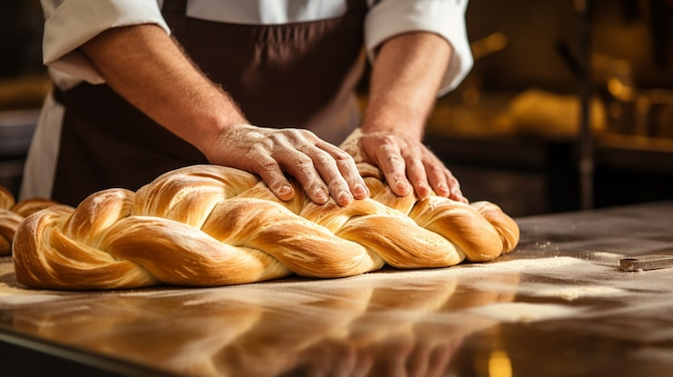
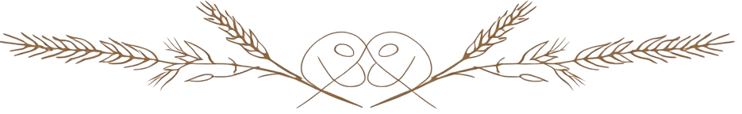
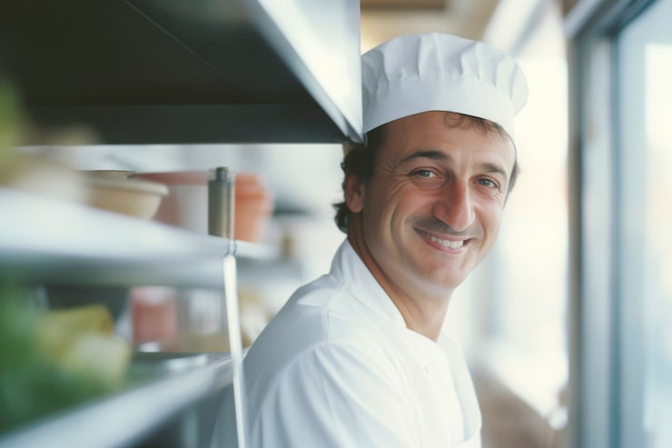
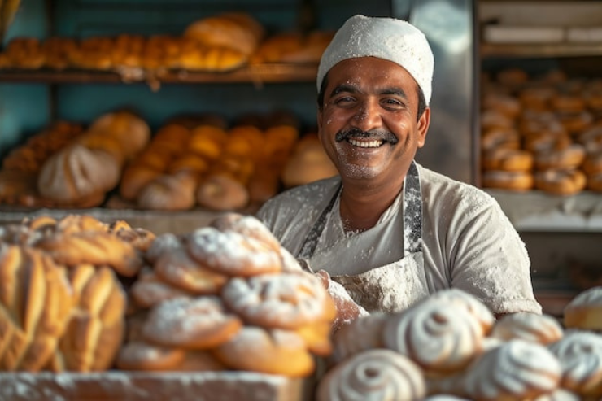
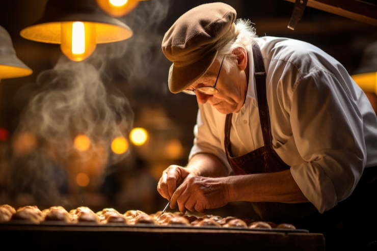
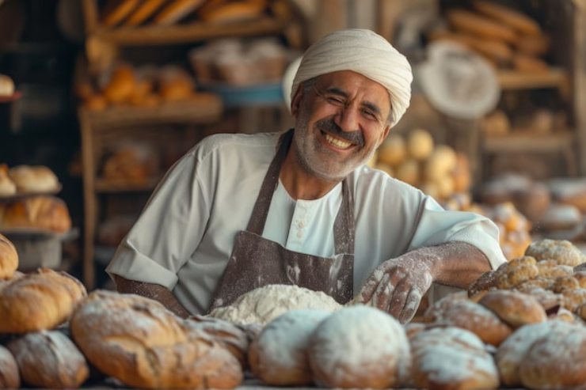
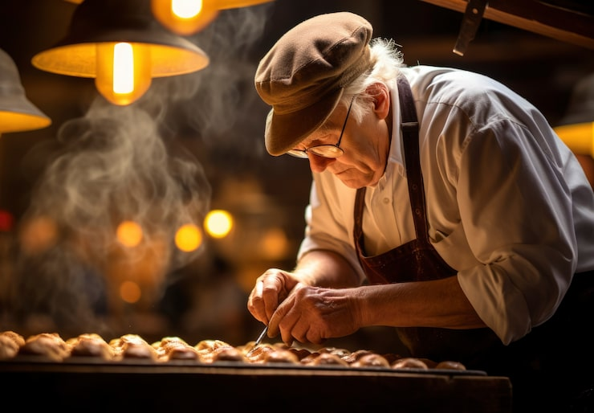

Panadería EsPan

La panadería EsPan, panadería con una tradición de más de 100 años busca que su web sea un punto de acceso para sus productos así como un espacio de información útil y variada para aquellas personas que le guste la repostería. Nuestra historia está ligada al esfuerzo familiar y a la pasión por el buen pan, manteniendo vivas las recetas que se han transmitido de generación en generación. Además, buscamos innovar con propuestas nuevas que se adapten a los gustos actuales, sin olvidar nunca la esencia de la panadería tradicional.
El objetivo es claro: la venta y difusión de su empresa como referente en el sector de la panadería. Queremos ser un punto de encuentro para quienes disfrutan del sabor auténtico y valoran la calidad artesanal. En esta web también compartiremos consejos, curiosidades y contenidos prácticos para que cada persona pueda llevar a casa un pedacito de la experiencia EsPan.

Nuestro equipo
Este es nuestro equipo de trabajo.Cada uno de nuestros panaderos y pasteleros aporta una experiencia única y un compromiso absoluto con la calidad. Creemos firmemente que la dedicación y el amor por lo que hacemos se reflejan en cada pieza de pan que sale de nuestro obrador.




Si deseas hablar con alguien del equipo, contacte por nuestro formulario indicando qué tipo de encargo desea realizar. Nos esforzamos por atender cada consulta con cercanía y profesionalidad, ofreciendo soluciones a medida según las necesidades de nuestros clientes.
Recetas hechas en casa
Nuestra sección de "hazlo en casa" es una sección dedicada a transmitir recetas sencillas que todos podaís realizar en casa sin mucho esfuerzo. Nuestra pasión por lo tradicional y lo hecho con amor nos hace compartir estas recetas que llevamos desarrollando desde hace más de 100 años.
Podcast: EsPan tapajaros
Aqui nuestras últimas entradas de nuestro programa radiofónico "EsPan tapjaros", donde tratamos todos los temas de interes en cuanto a la historia del pan. Cada episodio está diseñado para entretener e informar, con invitados especiales que nos cuentan sus experiencias y conocimientos en el mundo de la panadería y la repostería.
Episodio 2º: ¿Fermentar con cerveza es posible
Episodio 3º: ¿Es la crema necesaria en bollería?
Zona de contacto
Estamos siempre disponibles para resolver tus dudas, escuchar tus sugerencias o atender cualquier encargo especial. En EsPan creemos que la comunicación con nuestros clientes es tan importante como la calidad de nuestros productos, por eso ponemos a tu disposición este espacio para que nos escribas de manera sencilla y directa. Tu opinión nos ayuda a mejorar cada día y a seguir creciendo junto a nuestra comunidad.

Síguenos en nuestras redes
Podrás seguir nuestros progresoso y trabajo a través de las siguientes redes sociales. Tambien mostramos ofertas exclusivas a través de esas plataformas, ¡No te lo pierdas!